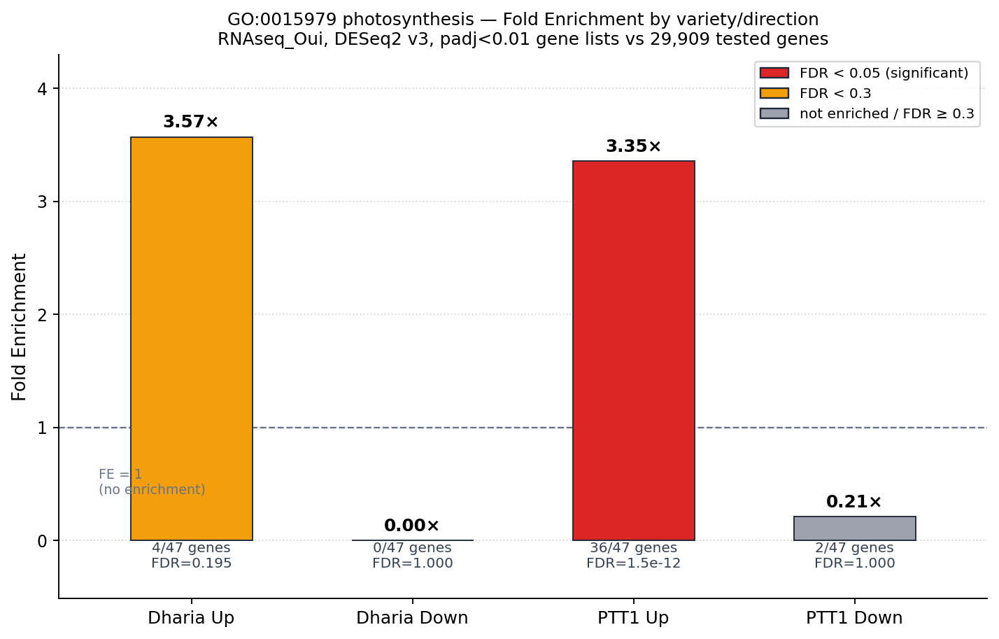
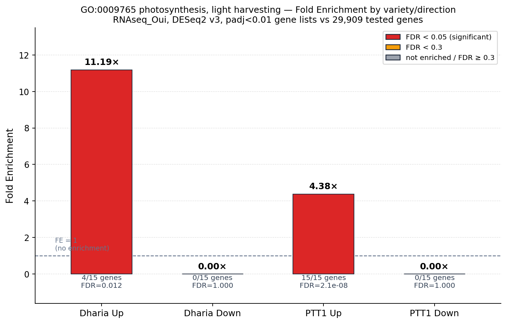
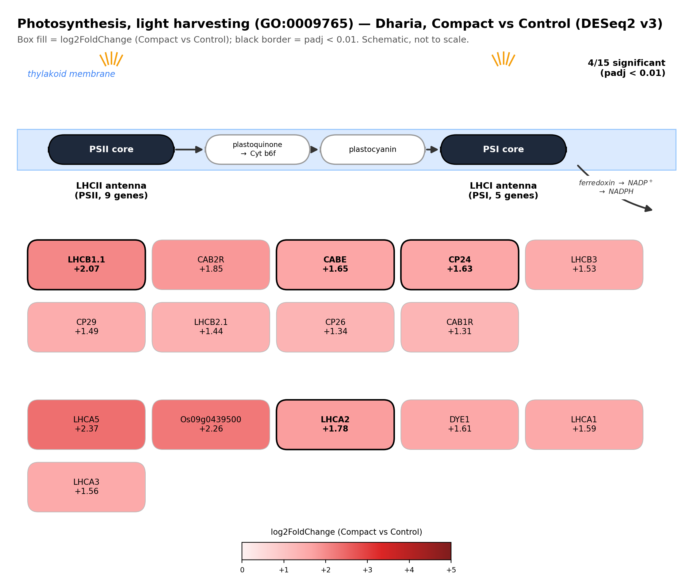
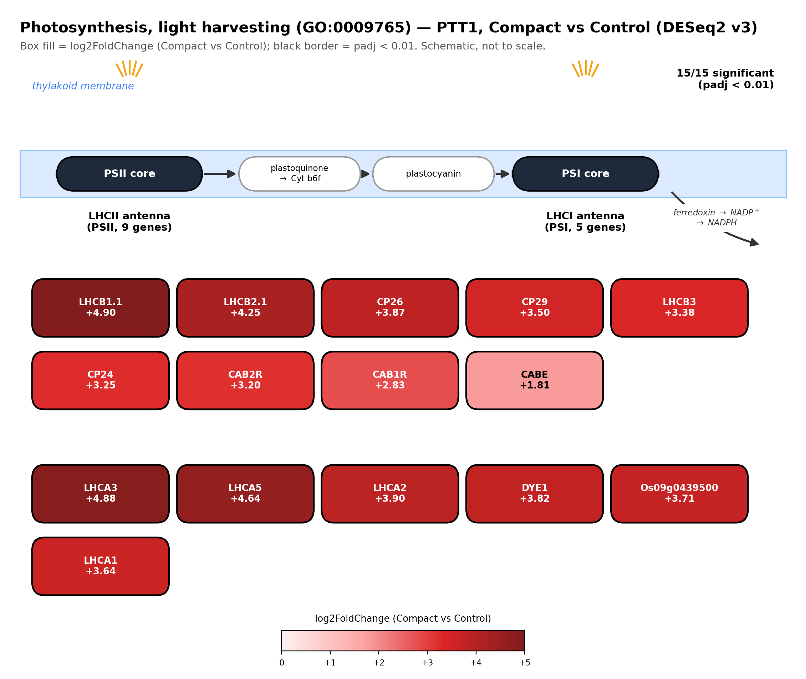

Photosynthesis / Light-Harvesting Pathway — Dharia vs PTT1, Compact vs Control
Gene-level detail behind the top hit in PTT1 Up: photosynthesis (GO:0015979, FE = 3.35×, FDR ≈ 1.5×10⁻¹², 36/47 genes) and its most concentrated sub-term, photosynthesis, light harvesting (GO:0009765, only 15 genes total in this GO term — PTT1 Up hits all 15). Unlike the glutathione story, this one is not a case of opposite directions between varieties: every one of the 15 light-harvesting genes moves the same way (up) in both Dharia and PTT1. The difference is statistical power, not biology.
Fold Enrichment comparison
Both the broad photosynthesis term and the specific light harvesting sub-term are significant in PTT1 Up; light harvesting is also significant in Dharia Up (FDR = 0.012), it just doesn't have enough genes/power for the broader photosynthesis term to clear FDR < 0.05 (FDR = 0.195, though the fold-enrichment itself, 3.57×, is actually slightly higher than PTT1's 3.35×).


Gene-level view: light-harvesting complex (LHCI/LHCII), both varieties
The 15-gene light-harvesting term splits into the PSII antenna complex (LHCB/CP24/CP26/CP29/CAB family, 9 genes light-harvesting complex II) and the PSI antenna complex (LHCA family + DYE1, 5–6 genes, light-harvesting complex I). Every single gene in both groups moves in the same direction (up) in both varieties — PTT1 just has enough statistical power (6,830-gene Up list vs Dharia's 713) to call all 15 significant, where Dharia only clears padj < 0.01 for 4 of them.


กลไกโดยสรุป (ภาษาไทย): ยีนกลุ่มนี้เป็นโปรตีนจับคลอโรฟิลล์ a/b (chlorophyll a/b-binding proteins) ที่ประกอบเป็น antenna complex รอบระบบแสง (photosystem) สองชุด — LHCII ล้อมรอบ PSII และ LHCI ล้อมรอบ PSI ทำหน้าที่ดักจับพลังงานแสงแล้วส่งต่อไปยัง reaction center เพื่อขับเคลื่อน electron transport chain (PSII → plastoquinone → cytochrome b6f → plastocyanin → PSI → ferredoxin → NADP+ รีดิวซ์เป็น NADPH) การที่ยีนกลุ่มนี้ถูกกระตุ้น ขึ้นพร้อมกันแทบทั้งตระกูลในทั้งสองพันธุ์ บ่งชี้ว่าทั้ง Dharia และ PTT1 เพิ่มขีดความสามารถในการดักจับ แสง/สังเคราะห์แสงภายใต้ภาวะดินอัดแน่น เพียงแต่ PTT1 แสดงผลนี้ชัดเจนและมีนัยสำคัญทางสถิติมากกว่า เพราะมีจำนวนยีนที่เปลี่ยนแปลงในภาพรวมมากกว่ามาก (power สูงกว่า) ไม่ใช่เพราะกลไกทางชีววิทยาต่างกัน
← Back to GO Enrichment overview for the full Dharia/PTT1 Up/Down comparison this term came from.